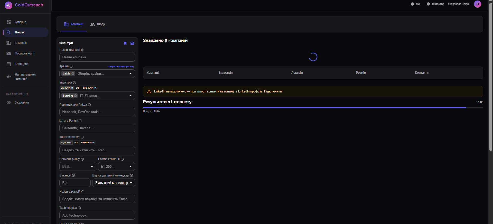
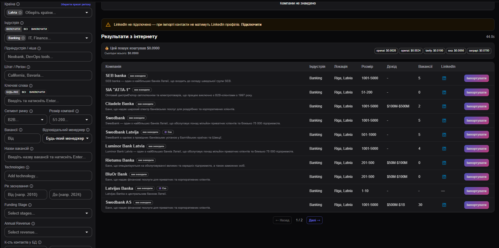
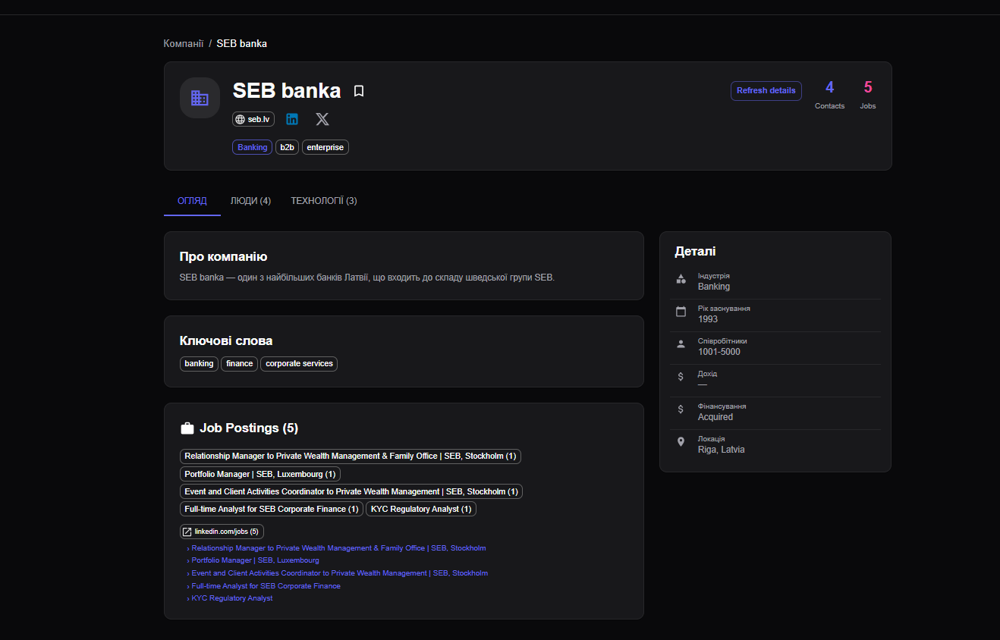
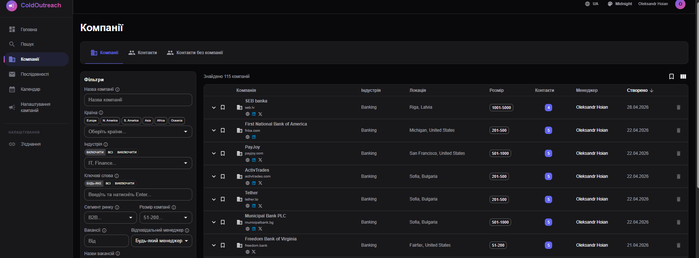
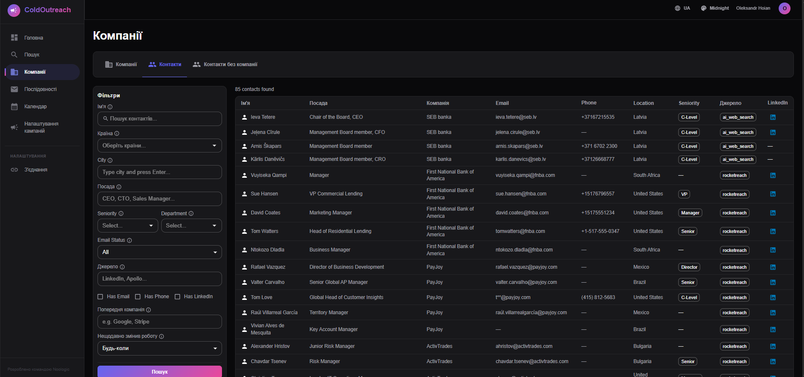
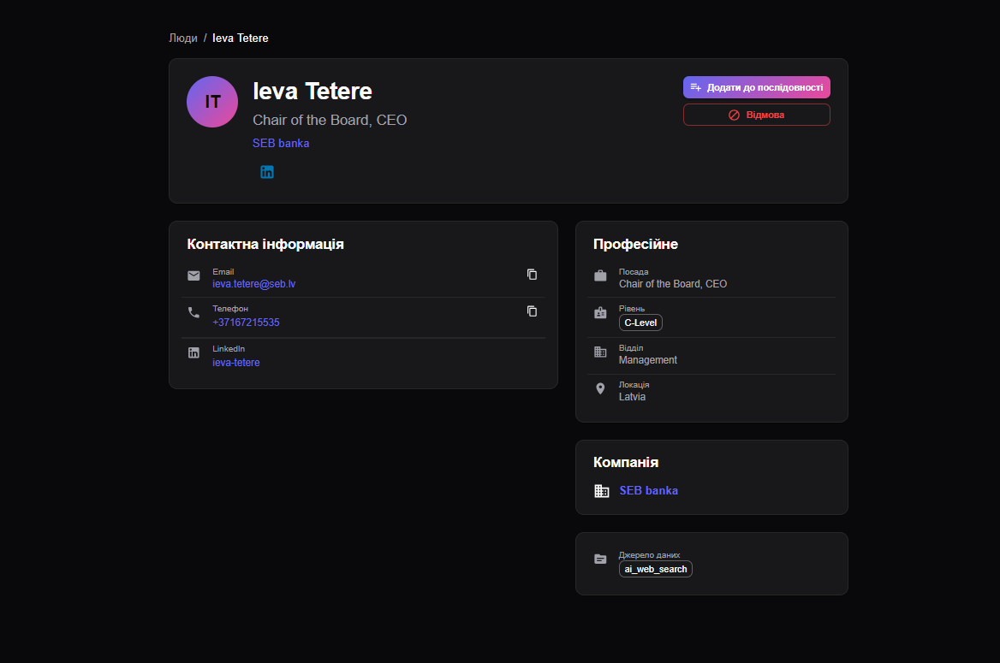
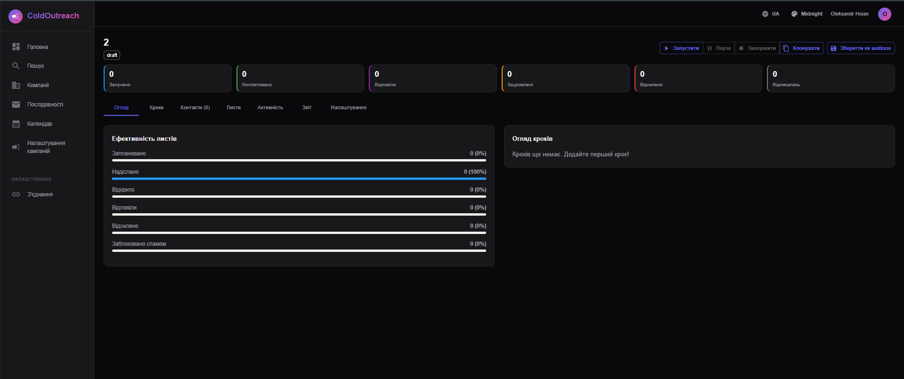
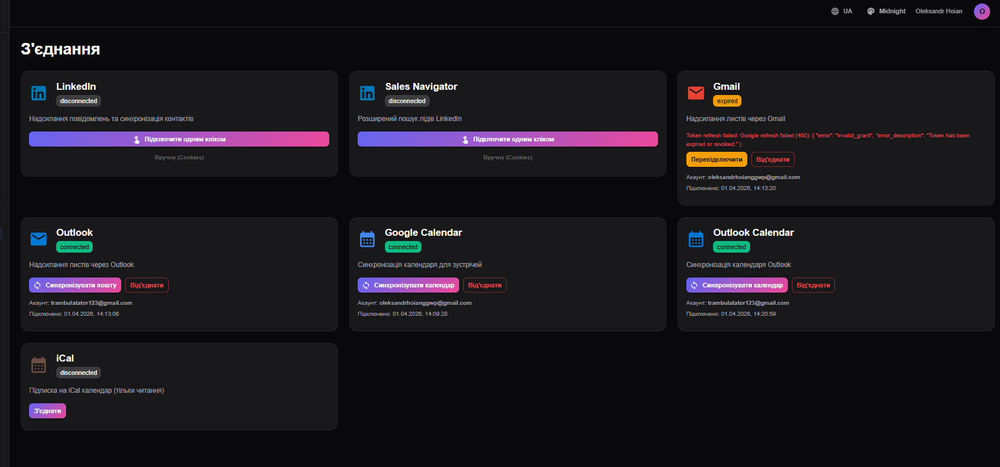
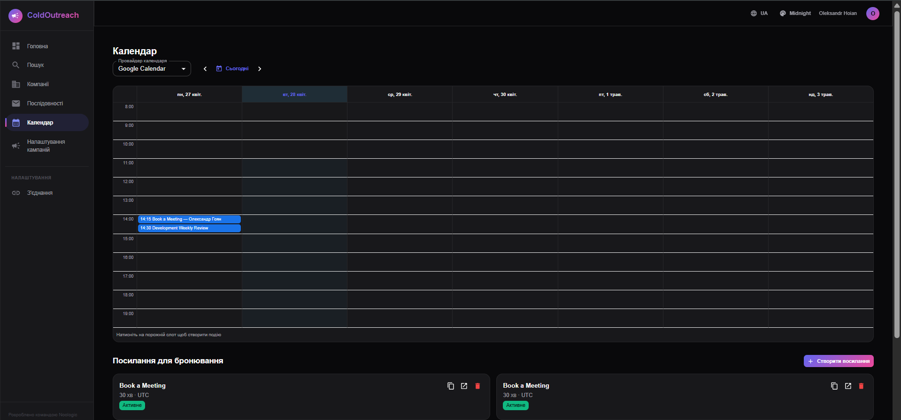

Розробка нового функціоналу платформи ColdOutreach для автоматизації холодного маркетингу: пошук компаній, мультиканальні розсилки, AI-персоналізація та інтеграції з LinkedIn, поштою та календарем.
Базова інформація про місце, термін та керівників проходження виробничої практики.
6 тижнів повного робочого дня
Команда розробки SaaS-платформи для B2B
Повний стек: серверна та клієнтська частини, інтеграції
Директор ТОВ «БІЗНЕС-КОНСТРУКТОР УКРАЇНА»
Доцент кафедри комп'ютерних наук та ІС
4 курс · спеціальність 126 ІСТ · бакалавр
Платформа для автоматизації холодного маркетингу. Користувач знаходить релевантні компанії та контакти, запускає мультиканальні розсилки (пошта + LinkedIn + дзвінки) та відстежує конверсію в єдиному інтерфейсі.
Скоротити час від ідеї холодної кампанії до першого зацікавленого клієнта з тижнів до годин завдяки автоматизації пошуку, персоналізації та доставки повідомлень.
Команди з продажів у B2B-сегменті, агенції з лідогенерації, продуктові стартапи, які шукають канал активного залучення клієнтів.
Пошук компаній за 6+ фільтрами (галузь, сегмент ринку, вакансії, локація), деталізація до контактів, розсилки з A/B-кроками, AI-персоналізація на GPT-4o.
Стек, з яким велась розробка протягом усього періоду практики.
Багатокомпонентна архітектура з асинхронним API, фоновими виконавцями та зовнішніми інтеграціями.
Користувацький потік від першого пошуку до аналітики результатів кампанії.
OAuth: LinkedIn, Email, Календар
Фільтри: галузь, локація, сегмент, вакансії
Збережені фільтри → збережені компанії
Кроки: Email · LinkedIn · Дзвінок
Celery + обмеження частоти
Доставлено · відповіді · зацікавлені · відписки
Повний список модулів, які я особисто розробляв або в розробку яких суттєво долучався.
Поетапний план робіт із настановчою конференцією, реалізацією, тестуванням та захистом.
Як перевірялась якість коду та коректність реалізованого функціоналу.
Зведені кількісні показники виконаної роботи за період 16.03 – 24.04.2026.
Повний робочий день
Сервер · Клієнт · AI · Асинхронні задачі
Code review від техліда
Unit + integration
| Категорія | Технологія / показник | Деталі |
|---|---|---|
| Серверна частина | FastAPI · Python 3.12 | Маршрути, сервіси, репозиторії, JWT, Pydantic v2 |
| База даних | PostgreSQL 16 | SQLAlchemy async, Alembic, 15+ таблиць |
| Клієнтська частина | React 18 · TS · Vite | Material UI, TanStack Query, форми та таблиці |
| Фонові задачі | Celery + Beat · Redis | Відправник розсилок, парсери, веб-скрейпер |
| Інтеграції | 5 зовнішніх сервісів | Gmail · Outlook · Google/Outlook Calendar · LinkedIn · OpenAI |
| AI | OpenAI GPT-4o | Багаторакурсний пошук, виокремлення сніпетів, облік вартості токенів |
| Тестування | pytest · Swagger · перегляд коду | Юніт- та інтеграційні тести, ручне приймальне |
| Інфраструктура | Docker Compose | 5 сервісів: API, клієнт, Postgres, Redis, виконавець |
Скріншоти ключових екранів реалізованого функціоналу — пошук компаній та контактів, картки, мультикрокові розсилки, інтеграції та календар бронювань.








